5. EDA temporal#
Alcance
Este capítulo usa solo el entrenamiento: 16 meses, de enero de 2025 a abril de 2026. El test (mayo a agosto de 2026) no se abre aquí: ni su tasa ni sus distribuciones entran en ninguna decisión. Con una serie tan corta las pruebas tienen poca potencia, y sus resultados se leen como indicios.
El panel no tiene componente espacial: no hay coordenadas y ubicacion es un código sin geometría,
por lo que los análisis espaciales del enunciado (2.7 y 2.8) no aplican.
import sys
import warnings
import numpy as np
import pandas as pd
import matplotlib.pyplot as plt
import seaborn as sns
from scipy import stats
from sklearn.metrics import log_loss
from statsmodels.tsa.stattools import adfuller, kpss
from statsmodels.stats.diagnostic import acorr_ljungbox
from statsmodels.stats.multitest import multipletests
from statsmodels.graphics.tsaplots import plot_acf, plot_pacf
from statsmodels.formula.api import logit
sys.path.insert(0, '.')
warnings.filterwarnings('ignore')
from comun import (cargar, particion, estilo, tasa, tasa_ic, etiquetar, puntos, pliegues_temporales,
OBJETIVO, NUM, BIN, CAT, PREDICTORAS, BLOQUE, BLOQUES, NOMBRE, VERDE, ORO, GRIS, BORDE)
estilo()
rng = np.random.default_rng(2026)
tr, _ = particion(cargar())
serie = tasa_ic(tr, 'mes')
serie.index = pd.PeriodIndex(serie.index, freq='M')
x = serie.index.to_timestamp()
MESES = ['ene', 'feb', 'mar', 'abr', 'may', 'jun', 'jul', 'ago', 'sep', 'oct', 'nov', 'dic']
print(f'entrenamiento: {len(tr):,} filas | {int(tr[OBJETIVO].sum())} renuncias | '
f'tasa mensual {100 * tr[OBJETIVO].mean():.2f} %')
entrenamiento: 67,416 filas | 688 renuncias | tasa mensual 1.02 %
5.1. Validación de la variable temporal#
Antes de mirar la serie verificamos la variable mes: formato, frecuencia, huecos, duplicados y
cobertura (cuántas personas y cuántos datos de la historia laboral hay en cada mes).
formato = tr.mes.str.fullmatch(r'\d{4}-(0[1-9]|1[0-2])')
meses = pd.PeriodIndex(tr.mes.unique(), freq='M').sort_values()
esperados = pd.period_range(meses.min(), meses.max(), freq='M')
huecos = sorted(set(esperados) - set(meses)) or 'ninguno'
por_persona = tr.groupby('persona_id').mes.agg(['size', 'min', 'max'])
indice = lambda m: int(m[:4]) * 12 + int(m[5:])
continuas = (por_persona['max'].map(indice) - por_persona['min'].map(indice) + 1 == por_persona['size'])
print(f'formato AAAA-MM válido en {100 * formato.mean():.1f} % de las filas | frecuencia: mensual')
print(f'meses: {len(meses)} de {len(esperados)} esperados entre {meses.min()} y {meses.max()} | '
f'huecos: {huecos}')
print(f'persona-mes repetidas: {int(tr.duplicated(["persona_id", "mes"]).sum())}')
print(f'personas por mes: mínimo {serie.filas.min():,}, máximo {serie.filas.max():,}')
print(f'personas: {len(por_persona):,} | presentes los 16 meses: {100 * (por_persona["size"] == 16).mean():.1f} % | '
f'meses por persona (mediana): {por_persona["size"].median():.0f}')
print(f'personas sin meses intermedios faltantes: {100 * continuas.mean():.1f} %')
formato AAAA-MM válido en 100.0 % de las filas | frecuencia: mensual
meses: 16 de 16 esperados entre 2025-01 y 2026-04 | huecos: ninguno
persona-mes repetidas: 0
personas por mes: mínimo 3,986, máximo 4,423
personas: 5,500 | presentes los 16 meses: 58.3 % | meses por persona (mediana): 16
personas sin meses intermedios faltantes: 99.4 %
cobertura = pd.DataFrame({b: tr[v].notna().mean(axis=1).groupby(tr.mes).mean() * 100
for b, v in BLOQUES.items()}).T
fig, ax = plt.subplots(figsize=(11, 3.4))
sns.heatmap(cobertura, annot=True, fmt='.0f', cmap='verde', vmin=50, vmax=100, ax=ax,
cbar_kws={'label': '% de datos presentes'}, annot_kws={'fontsize': 7})
ax.set(title='Cobertura de la historia laboral por bloque y mes (% de celdas con dato)', xlabel='', ylabel='')
plt.tight_layout()
plt.show()
rango = tr.groupby('mes')[[c for c in PREDICTORAS]].apply(lambda z: z.notna().mean() * 100)
variacion = (rango.max() - rango.min()).sort_values(ascending=False)
print('variables cuya cobertura más cambia entre meses (puntos porcentuales de filas con dato):')
print(pd.DataFrame({'mín. %': rango.min(), 'máx. %': rango.max(), 'rango': variacion})
.loc[variacion.index[:6]].round(1).to_string())
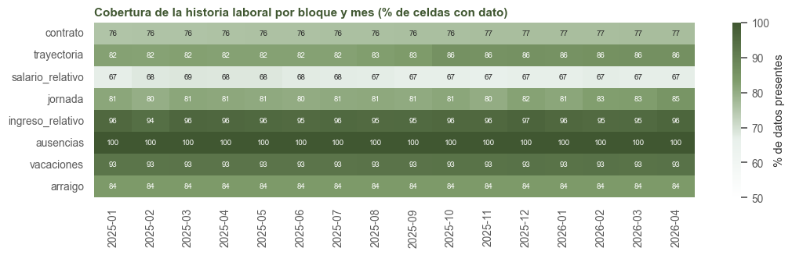
variables cuya cobertura más cambia entre meses (puntos porcentuales de filas con dato):
mín. % máx. % rango
tamano_equipo_jefe 49.4 81.6 32.2
horas_turno_1m 49.1 62.8 13.7
pct_entradas_sin_salida_3m 52.7 65.0 12.3
turnos_1m 52.7 65.0 12.3
domingos_3m 52.7 65.0 12.3
horas_turno_3m 52.0 63.9 11.9
Nótese que la variable temporal está limpia: todas las filas tienen el formato AAAA-MM, los 16 meses esperados están presentes, sin huecos ni persona-mes repetidas, y la planta activa crece de forma suave (de 3.986 a 4.423 personas), sin saltos que indiquen cargas incompletas. De las 5.500 personas del entrenamiento, el 58,3 % está los 16 meses y el 99,4 % no tiene meses intermedios faltantes (el resto son reingresos). La cobertura de la historia laboral es estable por bloque; los únicos cambios de nivel están en el tamaño del equipo del jefe (entre 49 % y 82 % de filas con dato, con el salto en el segundo semestre de 2025) y en las marcaciones biométricas de la jornada (entre 49 % y 65 %). Esos dos cambios reaparecen en la deriva de la población.
La fila del mes \(t\) describe a la persona con la información cerrada antes de que empiece el mes:
nómina, marcaciones y novedades llegan hasta \(t-1\), las variables con sufijo _r2 hasta \(t-2\), y el
objetivo es la renuncia en \(t\). Por eso cualquier rezago de este capítulo usa solo información pasada.
5.2. La serie mensual#
fig, ax = plt.subplots(2, 1, figsize=(11, 5.5), sharex=True)
ax[0].plot(x, serie['tasa_%'], marker='o', color=VERDE, label='Tasa mensual')
ax[0].fill_between(x, serie.ic_bajo, serie.ic_alto, alpha=0.2, color=VERDE)
puntos(ax[0], x, serie['tasa_%'])
ax[0].plot(x, serie['tasa_%'].rolling(3, center=True).mean(), ls='--', c=ORO, lw=1.2,
label='Media móvil de 3 meses (centrada)')
ax[0].axhline(100 * tr[OBJETIVO].mean(), c=GRIS, lw=0.8)
ax[0].legend(fontsize=8)
ax[0].set(title='Tasa de renuncia mensual', ylabel='Tasa (%)')
barras = ax[1].bar(x, serie.filas, width=20, color=VERDE, **BORDE)
etiquetar(ax[1], barras, '{:,.0f}', fontsize=6)
ax[1].set(title='Personas activas en el mes', ylabel='Número de personas')
plt.tight_layout()
plt.show()
# desviación esperada solo por azar binomial: sqrt(p (1 - p) / n) con el n de cada mes
p_global = tr[OBJETIVO].mean()
sd_binomial = 100 * np.sqrt(p_global * (1 - p_global) / serie.filas)
fig, ax = plt.subplots(figsize=(11, 2.8))
ax.plot(x, serie['tasa_%'].rolling(4).mean(), marker='.', label='Media móvil (4 meses)')
ax.plot(x, serie['tasa_%'].rolling(4).std(), marker='.', label='Desviación estándar móvil (4 meses)')
ax.plot(x, sd_binomial, ls=':', c=GRIS, label='Desviación esperada solo por azar binomial')
ax.set(title='Media y desviación estándar móviles de la tasa', ylabel='Puntos porcentuales')
ax.legend(fontsize=8)
plt.tight_layout()
plt.show()
chi_mes, p_mes = stats.chi2_contingency(np.c_[serie.renuncias, serie.filas - serie.renuncias],
correction=False)[:2]
print(f'desviación entre meses: observada {serie["tasa_%"].std():.3f} pp | '
f'esperada por azar binomial {sd_binomial.mean():.3f} pp')
print(f'homogeneidad de la tasa entre los 16 meses: chi-cuadrado {chi_mes:.1f} con 15 gl, p = {p_mes:.4f}')
serie[['filas', 'renuncias', 'tasa_%', 'ic_bajo', 'ic_alto']].T
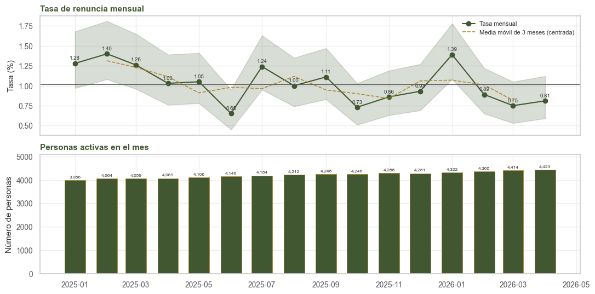
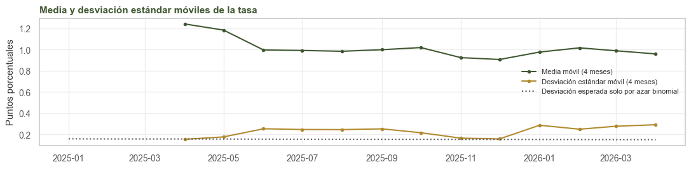
desviación entre meses: observada 0.238 pp | esperada por azar binomial 0.155 pp
homogeneidad de la tasa entre los 16 meses: chi-cuadrado 35.3 con 15 gl, p = 0.0022
| mes | 2025-01 | 2025-02 | 2025-03 | 2025-04 | 2025-05 | 2025-06 | 2025-07 | 2025-08 | 2025-09 | 2025-10 | 2025-11 | 2025-12 | 2026-01 | 2026-02 | 2026-03 | 2026-04 |
|---|---|---|---|---|---|---|---|---|---|---|---|---|---|---|---|---|
| filas | 3986.00 | 4064.00 | 4059.00 | 4069.00 | 4106.00 | 4146.00 | 4184.00 | 4212.00 | 4248.00 | 4246.00 | 4288.00 | 4281.00 | 4322.00 | 4368.00 | 4414.00 | 4423.00 |
| renuncias | 51.00 | 57.00 | 51.00 | 42.00 | 43.00 | 27.00 | 52.00 | 42.00 | 47.00 | 31.00 | 37.00 | 40.00 | 60.00 | 39.00 | 33.00 | 36.00 |
| tasa_% | 1.28 | 1.40 | 1.26 | 1.03 | 1.05 | 0.65 | 1.24 | 1.00 | 1.11 | 0.73 | 0.86 | 0.93 | 1.39 | 0.89 | 0.75 | 0.81 |
| ic_bajo | 0.97 | 1.08 | 0.96 | 0.76 | 0.78 | 0.45 | 0.95 | 0.74 | 0.83 | 0.51 | 0.63 | 0.69 | 1.08 | 0.65 | 0.53 | 0.59 |
| ic_alto | 1.68 | 1.81 | 1.65 | 1.39 | 1.41 | 0.95 | 1.63 | 1.35 | 1.47 | 1.03 | 1.19 | 1.27 | 1.78 | 1.22 | 1.05 | 1.12 |
Nótese que la tasa oscila alrededor de su media (1,02 %) entre 0,65 % (junio de 2025) y 1,40 % (febrero de 2025). La media móvil de cuatro meses baja de 1,24 % en enero-abril de 2025 a cerca de 1,0 % desde junio de 2025 y queda en 0,96 % en enero-abril de 2026: un descenso de nivel concentrado en el primer semestre de 2025, que se prueba en la sección de puntos de cambio. La desviación móvil (entre 0,15 y 0,29 puntos) está casi siempre por encima de la que daría el azar binomial con unas 4.200 personas por mes (0,155 puntos): la variación entre meses es real y no solo ruido de muestreo (chi-cuadrado de homogeneidad 35,3 con 15 gl, p = 0,002). Esa sobredispersión importa para leer las pruebas siguientes, que tratan las filas como independientes: sus valores p son optimistas.
5.3. Estacionalidad por mes del año#
Una descomposición STL con periodo anual necesita al menos dos ciclos completos (24 meses) para separar la tendencia de la componente estacional; aquí hay 16 meses, con dos observaciones de enero a abril y una sola de mayo a diciembre. Por eso no aplicamos STL: la componente estacional de mayo a diciembre sería, por construcción, el residuo de un único año. En su lugar comparamos la tasa por mes del año y los cuatro meses que se repiten.
d = tr.assign(anio=tr.mes.str[:4], m=tr.mes.str[5:].astype(int))
mes_anio = tasa_ic(d, 'm')
por_anio = d.pivot_table(index='m', columns='anio', values=OBJETIVO, aggfunc='mean') * 100
fig, ax = plt.subplots(figsize=(11, 3.4))
barras = ax.bar(mes_anio.index, mes_anio['tasa_%'], color=VERDE, alpha=0.8, **BORDE,
yerr=[mes_anio['tasa_%'] - mes_anio.ic_bajo, mes_anio.ic_alto - mes_anio['tasa_%']],
error_kw={'ecolor': GRIS, 'lw': 0.8})
for anio, marca in [('2025', 'o'), ('2026', 's')]:
ax.scatter(por_anio.index, por_anio[anio], marker=marca, color=ORO, zorder=3, s=22, label=anio)
ax.axhline(100 * p_global, c=GRIS, lw=0.8, ls='--')
ax.set_xticks(range(1, 13))
ax.set_xticklabels([f'{MESES[i - 1]}\n({"2 años" if i <= 4 else "1 año"})' for i in range(1, 13)], fontsize=8)
ax.set(title='Tasa de renuncia por mes del año (barras: los años juntos; puntos: cada año)',
ylabel='Tasa mensual (%)')
ax.legend(fontsize=8, title='Año')
plt.tight_layout()
plt.show()
dos_anios = por_anio.loc[1:4].copy()
dos_anios.index = MESES[:4]
print(dos_anios.round(2).to_string())
rho = stats.spearmanr(dos_anios['2025'], dos_anios['2026'])[0]
print(f'correlación de rangos entre los dos años (4 meses): {rho:.2f}')
chi_m, p_m = stats.chi2_contingency(pd.crosstab(d.m, d[OBJETIVO]).to_numpy(), correction=False)[:2]
print(f'homogeneidad por mes del año: chi-cuadrado {chi_m:.1f} con 11 gl, p = {p_m:.4f}')
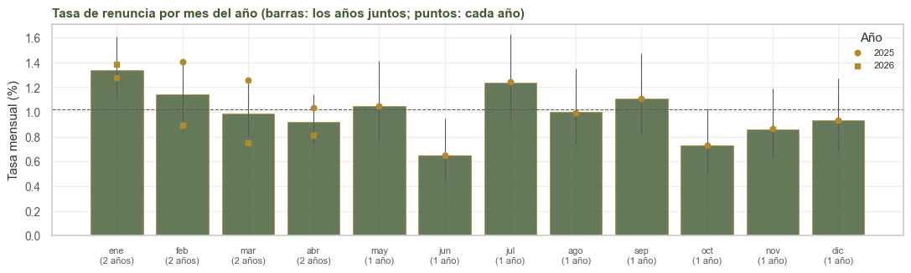
anio 2025 2026
ene 1.28 1.39
feb 1.40 0.89
mar 1.26 0.75
abr 1.03 0.81
correlación de rangos entre los dos años (4 meses): 0.60
homogeneidad por mes del año: chi-cuadrado 23.2 con 11 gl, p = 0.0165
Con solo 16 meses de entrenamiento hay dos eneros, dos febreros, dos marzos y dos abriles, y un único dato de cada mes de mayo a diciembre; una barra de un solo año no separa el mes del año del mes concreto. Nótese que:
Enero es el mes más alto al juntar los dos años (1,34 %), pero no en los dos años: en 2026 sí es el pico (1,39 %), mientras que en 2025 febrero (1,40 %) supera a enero (1,28 %).
Junio de 2025 es el mínimo de la serie (0,65 %) y julio de 2025 vuelve a 1,24 %.
La correlación de rangos entre los dos años en enero-abril (0,60) se calcula con cuatro puntos y no distingue nada del azar.
La prueba de homogeneidad por mes del año rechaza (chi-cuadrado 23,2 con 11 gl, p = 0,017), pero con la sobredispersión de la sección anterior ese valor p es optimista, y en ocho de los doce meses mide un solo mes concreto.
La conclusión es que hay indicios de un patrón de calendario, no una estacionalidad demostrada.
5.4. Efectos de calendario#
En Colombia la prima de servicios se paga en dos cuotas, a más tardar el 30 de junio y el 20 de diciembre (Código Sustantivo del Trabajo, art. 306). Si las personas esperan a cobrar la prima para irse, los meses de pago (junio, diciembre) tendrían menos renuncias y los meses siguientes (julio, enero) más. Contrastamos tres hipótesis sugeridas por el calendario laboral: enero frente al resto, los meses después de la prima frente al resto y los meses de la prima frente al resto, con los valores p ajustados por Holm.
contrastes = {
'enero': d.m == 1,
'después de la prima (ene, jul)': d.m.isin([1, 7]),
'mes de la prima (jun, dic)': d.m.isin([6, 12]),
}
filas = []
for nombre, marca in contrastes.items():
t = tasa(d, marca)
chi, pv = stats.chi2_contingency(pd.crosstab(marca, d[OBJETIVO]).to_numpy(), correction=False)[:2]
filas.append({'contraste': nombre, 'meses': d.loc[marca, 'mes'].nunique(),
'renuncias': int(t.loc[True, 'renuncias']), 'tasa %': t.loc[True, 'tasa_%'],
'tasa resto %': t.loc[False, 'tasa_%'], 'razón de tasas': t.loc[True, 'tasa_%'] / t.loc[False, 'tasa_%'],
'chi-cuadrado': chi, 'p': pv})
calendario = pd.DataFrame(filas).set_index('contraste')
calendario['p Holm'] = multipletests(calendario.p, method='holm')[1]
calendario.round(3)
| contraste | meses | renuncias | tasa % | tasa resto % | razón de tasas | chi-cuadrado | p | p Holm |
|---|---|---|---|---|---|---|---|---|
| enero | 2 | 111 | 1.336 | 0.976 | 1.369 | 9.340 | 0.002 | 0.004 |
| después de la prima (ene, jul) | 3 | 163 | 1.305 | 0.956 | 1.365 | 12.270 | 0.000 | 0.001 |
| mes de la prima (jun, dic) | 2 | 67 | 0.795 | 1.053 | 0.755 | 4.847 | 0.028 | 0.028 |
Los tres contrastes van en la dirección de la hipótesis de la prima y los tres sobreviven a Holm: los meses de la prima tienen una tasa 25 % menor que el resto (0,80 % frente a 1,05 %; p Holm = 0,028), los meses siguientes una 37 % mayor (1,31 % frente a 0,96 %; p Holm = 0,001) y enero, solo, también un 37 % mayor (1,34 % frente a 0,98 %; p Holm = 0,004). Las hipótesis vienen del calendario laboral, pero la serie ya se había mirado al formularlas, y junio y julio aportan un único mes cada uno: el contraste de la prima descansa en junio y julio de 2025 y en dos eneros. Con la sobredispersión, los valores p son además optimistas. Se leen como un efecto de calendario plausible, que el modelo solo debe usar si también mejora fuera de muestra (se prueba al final del capítulo).
La cosecha de palma tiene picos de producción a lo largo del año, pero el panel no trae la producción. Su huella en la persona son las horas extra y los turnos, que sí están; en la sección de correlación cruzada se prueba si la carga de trabajo del mes anticipa la tasa.
5.5. Estacionariedad y autocorrelación#
Las pruebas ADF y KPSS tienen hipótesis nulas opuestas: ADF supone raíz unitaria (serie no estacionaria) y KPSS supone estacionariedad. Leerlas juntas evita tomar un «no rechazo» como una confirmación. Con 16 puntos se fija el número de rezagos (2) en lugar de elegirlo por criterio de información, que con tan pocos datos es inestable.
y_serie = serie['tasa_%'].to_numpy()
adf = adfuller(y_serie, maxlag=2, autolag=None)
kp = kpss(y_serie, regression='c', nlags=2)
lb = acorr_ljungbox(y_serie, lags=[3, 6])
print(f'ADF: estadístico {adf[0]:.2f}, p = {adf[1]:.3f} (H0: raíz unitaria)')
print(f'KPSS: estadístico {kp[0]:.2f}, p = {kp[1]:.3f} '
f'(H0: estacionaria; p acotado entre 0,01 y 0,10 por la tabla)')
print('Ljung-Box (H0: sin autocorrelación hasta el rezago k):',
{k: round(float(v), 3) for k, v in lb.lb_pvalue.items()})
fig, ax = plt.subplots(1, 2, figsize=(11, 3.2))
plot_acf(y_serie, lags=7, ax=ax[0], color=VERDE, vlines_kwargs={'colors': VERDE})
plot_pacf(y_serie, lags=7, ax=ax[1], method='ywm', color=VERDE, vlines_kwargs={'colors': VERDE})
ax[0].set(title='Autocorrelación de la tasa mensual', xlabel='Rezago (meses)')
ax[1].set(title='Autocorrelación parcial', xlabel='Rezago (meses)')
plt.tight_layout()
plt.show()
ADF: estadístico -3.44, p = 0.010 (H0: raíz unitaria)
KPSS: estadístico 0.36, p = 0.096 (H0: estacionaria; p acotado entre 0,01 y 0,10 por la tabla)
Ljung-Box (H0: sin autocorrelación hasta el rezago k): {3: 0.318, 6: 0.381}
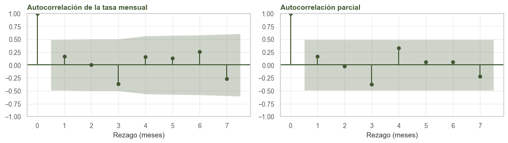
ADF rechaza la raíz unitaria (p = 0,010) y KPSS no rechaza la estacionariedad al 5 % (p ≈ 0,10, en el borde de la tabla): las dos apuntan a una serie estacionaria en nivel, sin tendencia estocástica. Que KPSS quede en el borde es coherente con el descenso de nivel de 2025. Ninguna autocorrelación ni autocorrelación parcial sale de las bandas (±0,5 con 16 puntos; la mayor en valor absoluto es la del rezago 3, cerca de −0,37) y Ljung-Box no rechaza hasta los rezagos 3 ni 6 (p = 0,32 y 0,38): la tasa agregada de un mes no anticipa la del siguiente, y no se agregan rezagos de la tasa global como predictoras.
5.6. Puntos de cambio#
Un cambio de nivel (por ejemplo, una política de retención o un cambio en el registro de retiros) rompería el supuesto de que los meses pasados describen a los futuros. Usamos dos pruebas simples y adecuadas a 16 puntos:
CUSUM: la suma acumulada de las desviaciones de cada mes respecto a la media, \(S_k = \sum_{t \le k} (y_t - \bar y)\). Si el nivel cambia en el mes \(k\), \(S_k\) se aleja de cero de forma sostenida hasta ese mes y luego vuelve. El estadístico es \(\max_k |S_k|\) y su valor p se obtiene permutando el orden de los meses (10.000 permutaciones), lo que es válido porque no hay autocorrelación detectable (sección anterior).
Corte óptimo antes/después: para cada mes de corte posible (con al menos tres meses a cada lado) se compara la tasa antes y después con un chi-cuadrado, y se toma el máximo. Elegir el corte que más separa infla el chi-cuadrado, por eso su valor p también se obtiene por permutación del mismo máximo. Además se comparan enero-abril de 2025 con enero-abril de 2026, que controla el mes del año.
ren = serie.renuncias.to_numpy().astype(float)
fil = serie.filas.to_numpy().astype(float)
def cusum(r, n):
y = r / n
return np.cumsum(y - y.mean())
def max_chi(r, n, minimo=3):
mejor, corte = 0.0, None
for k in range(minimo, len(r) - minimo + 1):
tabla = np.array([[r[:k].sum(), n[:k].sum() - r[:k].sum()], [r[k:].sum(), n[k:].sum() - r[k:].sum()]])
chi = stats.chi2_contingency(tabla, correction=False)[0]
if chi > mejor:
mejor, corte = chi, k
return mejor, corte
s = 100 * cusum(ren, fil)
obs_cusum = np.abs(s).max()
obs_chi, k_chi = max_chi(ren, fil)
perm_cusum, perm_chi = [], []
for _ in range(10_000):
orden = rng.permutation(len(ren))
perm_cusum.append(np.abs(100 * cusum(ren[orden], fil[orden])).max())
perm_chi.append(max_chi(ren[orden], fil[orden])[0])
p_cusum = (np.sum(np.array(perm_cusum) >= obs_cusum) + 1) / 10_001
p_chi = (np.sum(np.array(perm_chi) >= obs_chi) + 1) / 10_001
antes, despues = ren[:k_chi].sum() / fil[:k_chi].sum(), ren[k_chi:].sum() / fil[k_chi:].sum()
print(f'CUSUM: máx |S_k| = {obs_cusum:.2f} pp en {serie.index[np.abs(s).argmax()]}, p (permutación) = {p_cusum:.3f}')
print(f'corte óptimo: después de {serie.index[k_chi - 1]} | tasa antes {100 * antes:.2f} %, después {100 * despues:.2f} % '
f'| chi-cuadrado máx {obs_chi:.1f}, p (permutación del máximo) = {p_chi:.3f}')
ea = d[d.m <= 4]
tabla_ea = pd.crosstab(ea.anio, ea[OBJETIVO])
chi_ea, p_ea = stats.chi2_contingency(tabla_ea.to_numpy(), correction=False)[:2]
t_ea = tasa(ea, 'anio')
print(f'enero-abril: 2025 {t_ea.loc["2025", "tasa_%"]:.2f} % ({int(t_ea.loc["2025", "renuncias"])} renuncias) | '
f'2026 {t_ea.loc["2026", "tasa_%"]:.2f} % ({int(t_ea.loc["2026", "renuncias"])}) | chi-cuadrado {chi_ea:.1f}, p = {p_ea:.3f}')
fig, ax = plt.subplots(figsize=(11, 2.8))
ax.plot(x, s, marker='o', color=VERDE)
ax.axhline(0, c=GRIS, lw=0.8)
ax.axhline(np.quantile(perm_cusum, 0.95), c=ORO, ls='--', lw=0.8, label='Percentil 95 bajo permutación (|S_k|)')
ax.axhline(-np.quantile(perm_cusum, 0.95), c=ORO, ls='--', lw=0.8)
ax.set(title='CUSUM de la tasa mensual', ylabel='Suma acumulada (pp)')
ax.legend(fontsize=8)
plt.tight_layout()
plt.show()
CUSUM: máx |S_k| = 0.90 pp en 2025-05, p (permutación) = 0.192
corte óptimo: después de 2025-03 | tasa antes 1.31 %, después 0.96 % | chi-cuadrado máx 12.5, p (permutación del máximo) = 0.103
enero-abril: 2025 1.24 % (201 renuncias) | 2026 0.96 % (168) | chi-cuadrado 6.3, p = 0.012
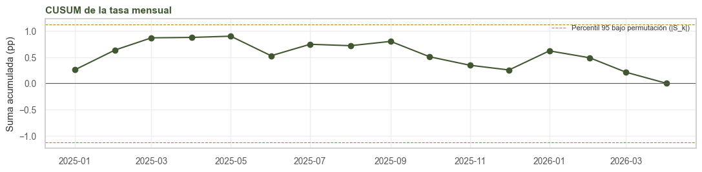
Nótese que las pruebas sin supuesto sobre el mes del cambio no rechazan: el CUSUM alcanza su máximo (0,90 puntos) en mayo de 2025 y no supera el percentil 95 de las permutaciones (p = 0,19), y el mejor corte (después de marzo de 2025: 1,31 % antes y 0,96 % después) tampoco es significativo una vez se corrige por haberlo elegido (p = 0,10). La comparación que controla el mes del año sí separa los dos años: enero-abril de 2025 tiene 1,24 % y enero-abril de 2026 0,96 % (p = 0,012, optimista por la sobredispersión). La lectura es un descenso moderado de nivel, de unos 0,3 puntos, entre el comienzo de 2025 y el resto del entrenamiento, que no se puede fechar con 16 puntos. Para el modelo tiene una consecuencia concreta: un intercepto estimado con todos los meses puede sobrestimar la tasa de los meses recientes. Eso afecta la calibración, no el orden de los puntajes (ROC y PR-AUC), y la validación de ventana creciente del capítulo 7 lo refleja porque cada pliegue valida un mes posterior.
5.7. Composición del mes y tasa futura#
Agregamos por mes características de la población y las correlacionamos con la tasa del mismo mes y de los tres siguientes: una correlación cruzada entre cada predictora agregada y el objetivo con rezagos de 0 a 3 meses,
Además de variables de composición (término fijo, antigüedad, primer mes, tamaño de la planta) se agregan las de la historia laboral con mayor asociación individual con la renuncia (capítulo 3): ingreso frente al pactado, meses con horas extra, horas extra del último mes (la huella de la carga de trabajo y de la cosecha; como toda la nómina, llega hasta el mes anterior), días de vacaciones pendientes, privación salarial frente al oficio y licencias no remuneradas. Con 16 meses (13 en el rezago 3), una correlación debe superar ±0,5 aproximadamente (\(2/\sqrt{n}\)) para distinguirse del azar, y con 40 correlaciones cabe esperar unas dos por encima de ese límite solo por azar.
por_mes = tr.groupby('mes')
agregado = pd.DataFrame({
'% término fijo': 100 * por_mes.contrato.apply(lambda z: (z == 'Termino Fijo').mean()),
'antigüedad mediana': por_mes.antig_meses.median(),
'% primer mes': 100 * por_mes.primer_mes.mean(),
'personas activas': por_mes.size(),
'ingreso vs pactado (3m)': por_mes.ingreso_vs_pactado_3m.mean(),
'meses con extras (12m)': por_mes.meses_con_extras_12m.mean(),
'horas extra (último mes)': por_mes.horas_extra_1m.mean(),
'vacaciones pendientes': por_mes.dias_vacaciones_pendientes.mean(),
'privación salarial': por_mes.privacion_oficio_nivel.mean(),
'% con licencia no rem. (3m)': 100 * por_mes.dias_licencia_no_remunerada_3m_r2.apply(lambda z: (z > 0).mean()),
})
tasa_mes = 100 * por_mes[OBJETIVO].mean()
cruzada = pd.DataFrame({v: [agregado[v].corr(tasa_mes.shift(-k)) for k in range(4)]
for v in agregado}, index=[f'tasa en t+{k}' for k in range(4)]).T
fig, ax = plt.subplots(figsize=(8, 4.6))
sns.heatmap(cruzada, annot=True, fmt='.2f', cmap='oro_verde', center=0, vmin=-1, vmax=1, ax=ax)
ax.set(title='Correlación de la variable agregada en t con la tasa en t+k')
plt.tight_layout()
plt.show()
print(f'correlaciones con |r| > 0,5: {int((cruzada.abs() > 0.5).sum().sum())} de {cruzada.size}')
# las mismas correlaciones sobre las primeras diferencias: quitan la tendencia común de las dos series
dif_x, dif_y = agregado.diff(), tasa_mes.diff()
cruzada_dif = pd.DataFrame({v: [dif_x[v].corr(dif_y.shift(-k)) for k in range(4)] for v in agregado},
index=[f't+{k}' for k in range(4)]).T
print(f'con primeras diferencias, |r| > 0,5: {int((cruzada_dif.abs() > 0.5).sum().sum())} de {cruzada_dif.size}')
print(cruzada_dif.round(2).to_string())
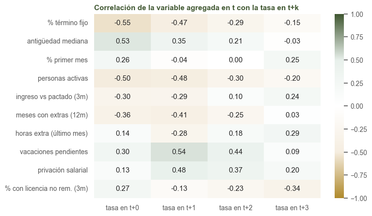
correlaciones con |r| > 0,5: 4 de 40
con primeras diferencias, |r| > 0,5: 3 de 40
t+0 t+1 t+2 t+3
% término fijo -0.20 -0.03 0.17 0.01
antigüedad mediana 0.42 -0.24 0.12 -0.48
% primer mes 0.06 -0.15 -0.07 0.34
personas activas 0.21 -0.28 0.23 -0.17
ingreso vs pactado (3m) -0.24 -0.18 0.34 0.48
meses con extras (12m) -0.03 -0.21 -0.03 0.57
horas extra (último mes) 0.25 -0.70 0.29 -0.06
vacaciones pendientes -0.34 0.44 0.20 -0.16
privación salarial -0.43 0.40 0.01 -0.01
% con licencia no rem. (3m) 0.64 -0.25 0.00 -0.50
En niveles, 4 de las 40 correlaciones superan 0,5 en valor absoluto y todas son del mismo tipo: los meses con más término fijo (−0,55), más personas activas (−0,50) o mayor antigüedad mediana (0,53, con signo contrario) se mueven con la tasa del mismo mes, y los meses con más vacaciones pendientes tienen más renuncias al mes siguiente (0,54). El signo del término fijo es el contrario al individual (a nivel de persona el término fijo renuncia varias veces más): es una falacia ecológica producida por una tendencia común, porque a lo largo de la ventana crecen la planta y el término fijo mientras la tasa baja. Al quitar la tendencia con primeras diferencias esas correlaciones desaparecen y quedan otras tres sin patrón entre rezagos (las horas extra del último mes, −0,70 con la tasa del mes siguiente, pero +0,25 y +0,29 en los rezagos vecinos): tres de 40 es lo que se espera por azar. La composición agregada del mes no anticipa la tasa, tampoco la carga de horas extra asociada a la cosecha, y no se incluyen agregados mensuales rezagados como predictoras; las variables de la historia ya entran a nivel de persona.
5.8. Deriva de la población#
Para un corte temporal, el riesgo principal es que la población cambie: si los meses finales tienen otra mezcla de contratos, antigüedades o jornadas, el modelo se evalúa sobre personas distintas de las que usó para aprender. Lo medimos con el índice de estabilidad poblacional (PSI) de las 105 predictoras entre el primer semestre de 2025 y los meses de 2026 del entrenamiento (enero a abril). Con \(a_j\) y \(b_j\) la proporción de filas en la categoría (o el decil) j en cada periodo,
que es una versión simétrica de la divergencia de Kullback-Leibler. La regla usual es: PSI < 0,1 estable, de 0,1 a 0,25 cambio moderado y > 0,25 cambio grande. Las numéricas con más de 10 valores distintos se cortan en deciles del entrenamiento (con el valor mínimo en un tramo propio, para que los ceros de las variables de conteo no se mezclen con los unos); el resto se trata como categórica. El faltante es una categoría más, así que un cambio de cobertura también cuenta como deriva.
def psi(a, b):
pa = a.value_counts(normalize=True)
pb = b.value_counts(normalize=True)
categorias = pa.index.union(pb.index)
pa = pa.reindex(categorias).fillna(0) + 1e-4
pb = pb.reindex(categorias).fillna(0) + 1e-4
return float(((pa - pb) * np.log(pa / pb)).sum())
def en_tramos(v, *partes):
"""Deciles del entrenamiento para las numéricas continuas; el resto, tal cual. El nulo es una categoría."""
if v in NUM and tr[v].nunique() > 10:
q = np.quantile(tr[v].dropna(), np.linspace(0, 1, 11))
# el mínimo va en su propio tramo: en las variables con muchos ceros, los deciles repetidos no los mezclan
cortes = np.unique(np.r_[q[0] - 1e-9, q])
return [pd.cut(z, cortes).astype(str) for z in partes]
return [z.astype(str) for z in partes]
inicio = tr[tr.mes <= '2025-06']
fin = tr[tr.mes >= '2026-01']
filas = []
for v in PREDICTORAS:
a, b = en_tramos(v, inicio[v], fin[v])
filas.append({'variable': v, 'bloque': BLOQUE[v], 'PSI': psi(a, b),
'% con dato 2025 S1': 100 * inicio[v].notna().mean(),
'% con dato 2026': 100 * fin[v].notna().mean()})
deriva = pd.DataFrame(filas).set_index('variable').sort_values('PSI', ascending=False)
deriva['lectura'] = pd.cut(deriva.PSI, [-1, 0.1, 0.25, 99], labels=['estable', 'moderado', 'grande'])
print(deriva.lectura.value_counts().to_string())
print('\npor bloque (PSI mediano y máximo):')
print(deriva.groupby('bloque').PSI.agg(['size', 'median', 'max']).round(3).sort_values('max', ascending=False).to_string())
fig, ax = plt.subplots(figsize=(9, 4.6))
top = deriva.head(15).iloc[::-1]
barras = ax.barh(top.index, top.PSI, color=[ORO if p > 0.1 else VERDE for p in top.PSI], **BORDE)
etiquetar(ax, barras, '{:.3f}')
ax.axvline(0.1, c=GRIS, ls='--', lw=0.8)
ax.axvline(0.25, c=GRIS, ls=':', lw=0.8)
ax.set(title='Las 15 predictoras con mayor PSI (2025 S1 frente a 2026 ene-abr)', xlabel='PSI')
plt.tight_layout()
plt.show()
deriva[deriva.PSI > 0.1].round(3)
lectura
estable 91
grande 8
moderado 6
por bloque (PSI mediano y máximo):
size median max
bloque
salario_relativo 14 0.043 2.253
trayectoria 8 0.007 1.453
atributos 18 0.003 0.340
ingreso_relativo 13 0.015 0.214
contrato 6 0.013 0.178
jornada 27 0.019 0.113
arraigo 7 0.010 0.076
ausencias 7 0.025 0.044
vacaciones 5 0.025 0.041
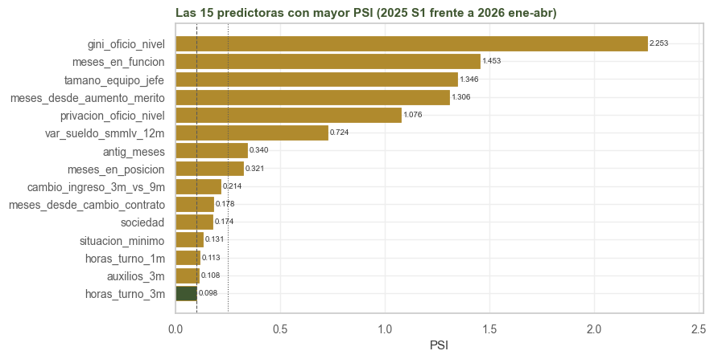
| variable | bloque | PSI | % con dato 2025 S1 | % con dato 2026 | lectura |
|---|---|---|---|---|---|
| gini_oficio_nivel | salario_relativo | 2.253 | 61.826 | 61.060 | grande |
| meses_en_funcion | trayectoria | 1.453 | 100.000 | 100.000 | grande |
| tamano_equipo_jefe | trayectoria | 1.346 | 50.401 | 79.746 | grande |
| meses_desde_aumento_merito | salario_relativo | 1.306 | 58.424 | 52.314 | grande |
| privacion_oficio_nivel | salario_relativo | 1.076 | 61.826 | 61.060 | grande |
| var_sueldo_smmlv_12m | salario_relativo | 0.724 | 72.595 | 74.417 | grande |
| antig_meses | atributos | 0.340 | 100.000 | 100.000 | grande |
| meses_en_posicion | trayectoria | 0.321 | 100.000 | 100.000 | grande |
| cambio_ingreso_3m_vs_9m | ingreso_relativo | 0.214 | 82.959 | 82.946 | moderado |
| meses_desde_cambio_contrato | contrato | 0.178 | 100.000 | 100.000 | moderado |
| sociedad | atributos | 0.174 | 100.000 | 100.000 | moderado |
| situacion_minimo | salario_relativo | 0.131 | 47.605 | 49.934 | moderado |
| horas_turno_1m | jornada | 0.113 | 52.288 | 58.692 | moderado |
| auxilios_3m | ingreso_relativo | 0.108 | 97.360 | 97.552 | moderado |
# tabla completa de las 105 predictoras, ordenada por PSI
pd.set_option('display.max_rows', 120)
deriva.round(3)
Show code cell output
| variable | bloque | PSI | % con dato 2025 S1 | % con dato 2026 | lectura |
|---|---|---|---|---|---|
| gini_oficio_nivel | salario_relativo | 2.253 | 61.826 | 61.060 | grande |
| meses_en_funcion | trayectoria | 1.453 | 100.000 | 100.000 | grande |
| tamano_equipo_jefe | trayectoria | 1.346 | 50.401 | 79.746 | grande |
| meses_desde_aumento_merito | salario_relativo | 1.306 | 58.424 | 52.314 | grande |
| privacion_oficio_nivel | salario_relativo | 1.076 | 61.826 | 61.060 | grande |
| var_sueldo_smmlv_12m | salario_relativo | 0.724 | 72.595 | 74.417 | grande |
| antig_meses | atributos | 0.340 | 100.000 | 100.000 | grande |
| meses_en_posicion | trayectoria | 0.321 | 100.000 | 100.000 | grande |
| cambio_ingreso_3m_vs_9m | ingreso_relativo | 0.214 | 82.959 | 82.946 | moderado |
| meses_desde_cambio_contrato | contrato | 0.178 | 100.000 | 100.000 | moderado |
| sociedad | atributos | 0.174 | 100.000 | 100.000 | moderado |
| situacion_minimo | salario_relativo | 0.131 | 47.605 | 49.934 | moderado |
| horas_turno_1m | jornada | 0.113 | 52.288 | 58.692 | moderado |
| auxilios_3m | ingreso_relativo | 0.108 | 97.360 | 97.552 | moderado |
| horas_turno_3m | jornada | 0.098 | 54.224 | 59.896 | estable |
| meses_desde_postulacion | arraigo | 0.076 | 11.654 | 11.063 | estable |
| pct_ultimo_aumento_merito | salario_relativo | 0.064 | 58.424 | 52.314 | estable |
| recargo_nocturno_12m | jornada | 0.063 | 97.360 | 97.552 | estable |
| pct_turnos_10h_3m | jornada | 0.060 | 54.224 | 59.896 | estable |
| jornada_vs_pago | jornada | 0.057 | 54.224 | 59.896 | estable |
| turnos_1m | jornada | 0.056 | 55.158 | 60.969 | estable |
| gana_minimo | salario_relativo | 0.054 | 66.165 | 65.328 | estable |
| bonificacion_otra_12m | ingreso_relativo | 0.052 | 97.360 | 97.552 | estable |
| pct_turnos_12h_3m | jornada | 0.050 | 54.224 | 59.896 | estable |
| n_renovaciones | contrato | 0.047 | 100.000 | 100.000 | estable |
| dia_familia_12m | ausencias | 0.044 | 100.000 | 100.000 | estable |
| pct_entradas_sin_salida_3m | jornada | 0.044 | 55.158 | 60.969 | estable |
| periodos_vacaciones_pendientes | vacaciones | 0.041 | 100.000 | 100.000 | estable |
| ubicacion | atributos | 0.038 | 100.000 | 100.000 | estable |
| dias_capacitacion_12m | ausencias | 0.037 | 100.000 | 100.000 | estable |
| dias_vacaciones_pendientes | vacaciones | 0.036 | 100.000 | 100.000 | estable |
| residuo_sueldo | salario_relativo | 0.032 | 66.165 | 65.328 | estable |
| domingos_3m | jornada | 0.031 | 55.158 | 60.969 | estable |
| horas_extra_1m | jornada | 0.027 | 89.693 | 90.432 | estable |
| horas_extra_12m | jornada | 0.025 | 89.693 | 90.432 | estable |
| dias_licencia_no_remunerada_12m_r2 | ausencias | 0.025 | 100.000 | 100.000 | estable |
| dias_licencia_remunerada_12m | ausencias | 0.025 | 100.000 | 100.000 | estable |
| meses_desde_vacaciones | vacaciones | 0.025 | 64.028 | 66.811 | estable |
| bono_productividad_12m | ingreso_relativo | 0.023 | 97.360 | 97.552 | estable |
| postulaciones_internas_12m | arraigo | 0.022 | 100.000 | 100.000 | estable |
| pct_variable_3m | ingreso_relativo | 0.021 | 97.298 | 97.421 | estable |
| meses_al_vencimiento | contrato | 0.021 | 49.992 | 55.577 | estable |
| turnos_largos_sin_pago | jornada | 0.020 | 54.224 | 59.896 | estable |
| dominicales_12m | jornada | 0.020 | 97.360 | 97.552 | estable |
| cesantias_vivienda_historico | arraigo | 0.019 | 100.000 | 100.000 | estable |
| pct_turnos_nocturnos_3m | jornada | 0.019 | 54.224 | 59.896 | estable |
| licencias_no_remuneradas_12m | ausencias | 0.018 | 100.000 | 100.000 | estable |
| n_aumentos_merito_24m | salario_relativo | 0.018 | 100.000 | 100.000 | estable |
| meses_con_ausencia_pagada_12m | ingreso_relativo | 0.017 | 97.360 | 97.552 | estable |
| posicionamiento | salario_relativo | 0.017 | 61.519 | 60.803 | estable |
| oficio | atributos | 0.016 | 97.286 | 97.507 | estable |
| volatilidad_ingreso_12m | ingreso_relativo | 0.015 | 88.007 | 88.789 | estable |
| vacaciones_acumuladas_2p | vacaciones | 0.015 | 100.000 | 100.000 | estable |
| marca_biometrico | jornada | 0.014 | 100.000 | 100.000 | estable |
| dist_mediana_local | salario_relativo | 0.013 | 66.165 | 65.305 | estable |
| contrato | atributos | 0.013 | 100.000 | 100.000 | estable |
| horas_extra_3m | jornada | 0.012 | 89.693 | 90.432 | estable |
| recargo_nocturno_1m | jornada | 0.011 | 97.360 | 97.552 | estable |
| n_movimientos_laterales_12m | trayectoria | 0.011 | 100.000 | 100.000 | estable |
| estado_gestion_tiempos | jornada | 0.010 | 97.356 | 97.490 | estable |
| cesantias_vivienda_12m | arraigo | 0.010 | 100.000 | 100.000 | estable |
| ingreso_vs_pactado_3m | ingreso_relativo | 0.009 | 97.360 | 97.552 | estable |
| sabados_smmlv_1m | jornada | 0.008 | 97.360 | 97.552 | estable |
| pct_meses_con_extras_12m | jornada | 0.007 | 97.360 | 97.552 | estable |
| recargo_nocturno_3m | jornada | 0.006 | 97.360 | 97.552 | estable |
| traslado_12m | atributos | 0.006 | 100.000 | 100.000 | estable |
| meses_desde_aprendiz | contrato | 0.006 | 5.100 | 4.770 | estable |
| tipo_salario | salario_relativo | 0.005 | 100.000 | 100.000 | estable |
| dominicales_1m | jornada | 0.005 | 97.360 | 97.552 | estable |
| proceso_planta | atributos | 0.004 | 100.000 | 100.000 | estable |
| area_funcional | atributos | 0.004 | 99.975 | 99.971 | estable |
| familia_cargo | atributos | 0.003 | 97.286 | 97.507 | estable |
| cesantias_educacion_12m | arraigo | 0.003 | 100.000 | 100.000 | estable |
| nivel | atributos | 0.003 | 100.000 | 99.960 | estable |
| dominicales_3m | jornada | 0.003 | 97.360 | 97.552 | estable |
| linea | atributos | 0.003 | 100.000 | 100.000 | estable |
| meses_desde_ascenso | trayectoria | 0.002 | 8.269 | 8.883 | estable |
| sabados_smmlv_3m | jornada | 0.002 | 97.360 | 97.552 | estable |
| posicionamiento_local | salario_relativo | 0.002 | 66.165 | 65.305 | estable |
| meses_con_extras_12m | jornada | 0.002 | 97.360 | 97.552 | estable |
| edad | atributos | 0.002 | 100.000 | 100.000 | estable |
| personas_a_cargo | trayectoria | 0.001 | 100.000 | 100.000 | estable |
| bonif_ocasional_12m | ingreso_relativo | 0.001 | 97.360 | 97.552 | estable |
| bono_seleccionado_12m | ingreso_relativo | 0.001 | 97.360 | 97.552 | estable |
| n_ascensos_24m | trayectoria | 0.001 | 100.000 | 100.000 | estable |
| tipo_unidad | atributos | 0.001 | 99.975 | 99.971 | estable |
| nacido_en_depto_sede | arraigo | 0.001 | 75.375 | 76.465 | estable |
| meses_con_bpr_12m | ingreso_relativo | 0.001 | 97.360 | 97.552 | estable |
| genero | atributos | 0.001 | 100.000 | 100.000 | estable |
| tipo_costos | atributos | 0.001 | 100.000 | 100.000 | estable |
| requisicion_promocion_12m | arraigo | 0.001 | 100.000 | 100.000 | estable |
| en_mediana_local | salario_relativo | 0.001 | 66.165 | 65.305 | estable |
| elegible_horas_extra | jornada | 0.001 | 100.000 | 100.000 | estable |
| estado_civil | atributos | 0.000 | 99.975 | 99.977 | estable |
| dias_vacaciones_compensadas_12m | vacaciones | 0.000 | 100.000 | 100.000 | estable |
| bono_fiesta_12m | ingreso_relativo | 0.000 | 97.360 | 97.552 | estable |
| dias_licencia_no_remunerada_3m_r2 | ausencias | 0.000 | 100.000 | 100.000 | estable |
| fue_aprendiz | contrato | 0.000 | 100.000 | 100.000 | estable |
| dias_compensatorio_12m | ausencias | 0.000 | 100.000 | 100.000 | estable |
| sabados_smmlv_12m | jornada | 0.000 | 97.360 | 97.552 | estable |
| auxilio_educativo_12m | ingreso_relativo | 0.000 | 97.360 | 97.552 | estable |
| primer_mes | atributos | 0.000 | 100.000 | 100.000 | estable |
| ingreso_a_mitad | contrato | 0.000 | 100.000 | 100.000 | estable |
| es_jefe_formal | trayectoria | 0.000 | 100.000 | 100.000 | estable |
| reingreso | atributos | 0.000 | 100.000 | 100.000 | estable |
De las 105 predictoras, 91 son estables, 6 tienen un cambio moderado y 8 un cambio grande. Ausencias, vacaciones y arraigo no tienen ninguna variable por encima de 0,1, y en la jornada la mayor es un cambio moderado (horas por turno del último mes, 0,11). Los cambios grandes se concentran en el salario relativo y la trayectoria, y todos tienen una causa identificable que no es un cambio en quién trabaja en la empresa (siguiente gráfico, que muestra también las dos variables de jornada ya descartadas).
fig, ax = plt.subplots(1, 4, figsize=(14, 3.2))
por_mes.horas_diarias_teoricas.mean().plot(ax=ax[0], marker='o', color=ORO)
ax[0].set(title='Horas diarias teóricas (media)', xlabel='', ylabel='Horas')
por_mes.plan_horario.nunique().plot(ax=ax[1], marker='o', color=ORO)
ax[1].set(title='Planes de horario distintos', xlabel='', ylabel='Códigos en uso')
(100 * por_mes.tamano_equipo_jefe.apply(lambda z: z.notna().mean())).plot(ax=ax[2], marker='o', color=VERDE)
ax[2].set(title='Cobertura del tamaño del equipo del jefe', xlabel='', ylabel='Filas con dato (%)')
por_mes.meses_en_funcion.median().plot(ax=ax[3], marker='o', color=VERDE)
ax[3].set(title='Meses en la función (mediana)', xlabel='', ylabel='Meses')
for a in ax:
a.tick_params(axis='x', rotation=60)
plt.tight_layout()
plt.show()
print('desviación estándar de horas_diarias_teoricas dentro de cada mes (máximo entre meses):',
round(float(tr.groupby('mes').horas_diarias_teoricas.std().max()), 4))
# las dos variables de jornada descartadas por marcar la fecha (comun.FUERA): su PSI con el mismo método
print('PSI de las descartadas:', {v: round(psi(*en_tramos(v, inicio[v], fin[v])), 1)
for v in ['horas_diarias_teoricas', 'plan_horario']})
# cambio de peso de las sociedades entre los dos periodos (sin códigos: solo los dos mayores cambios)
peso = pd.DataFrame({'2025 S1': inicio.sociedad.value_counts(normalize=True),
'2026': fin.sociedad.value_counts(normalize=True)}).fillna(0) * 100
cambio = (peso['2026'] - peso['2025 S1']).sort_values()
print(f'sociedad que más pierde peso: de {peso.loc[cambio.index[0], "2025 S1"]:.1f} % a '
f'{peso.loc[cambio.index[0], "2026"]:.1f} % de las filas | la que más gana: +{cambio.iloc[-1]:.1f} puntos | '
f'el resto cambia menos de {cambio.iloc[1:-1].abs().max():.1f} puntos')
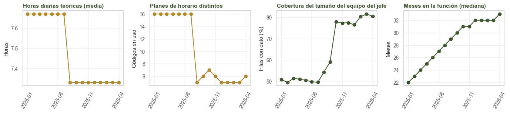
desviación estándar de horas_diarias_teoricas dentro de cada mes (máximo entre meses): 0.0159
PSI de las descartadas: {'horas_diarias_teoricas': 17.9, 'plan_horario': 14.4}
sociedad que más pierde peso: de 3.8 % a 0.1 % de las filas | la que más gana: +3.7 puntos | el resto cambia menos de 0.8 puntos
Nótese que las causas son de cuatro tipos:
La reducción legal de la jornada (motivo de un descarte). La Ley 2101 de 2021 baja la semana laboral de forma escalonada: 47 horas desde julio de 2023, 46 desde julio de 2024, 44 desde julio de 2025 y 42 desde julio de 2026. En el panel,
horas_diarias_teoricaspasa de 7,67 a 7,33 horas (46 y 44 horas semanales en seis días) para todos a partir de agosto de 2025, el escalón de julio visto un mes después por el rezago, y la codificación deplan_horariocambia en el mismo mes. Dentro de cada mes las horas teóricas no varían (desviación máxima 0,016 horas): la variable no describe a la persona sino la fecha, y con el escalón de julio de 2026, dentro del periodo de prueba, tomaría un valor que no existió en el entrenamiento. Con el mismo método, su PSI sería 17,9 y el deplan_horario14,4, los mayores del panel. Por eso las dos quedan fuera de las predictoras, igual quecambios_plan_12m, y no aparecen en la tabla.El ciclo anual del salario.
gini_oficio_nivel(2,25),privacion_oficio_nivel(1,08) yvar_sueldo_smmlv_12m(0,72) cambian con el ciclo anual de ajustes salariales (el salario mínimo legal se ajusta cada enero), ymeses_desde_aumento_merito(1,31) es un contador que se reinicia con cada ajuste y crece mientras no lo hay. Comparar el primer semestre de 2025 con enero-abril de 2026 compara fases distintas de ese ciclo.El envejecimiento del panel.
meses_en_funcion(1,45),antig_meses(0,34),meses_en_posicion(0,32) ymeses_desde_cambio_contrato(0,18) crecen porque son en su mayoría las mismas personas con un año más: la mediana de meses en la función sube un mes por mes (de 22 a 33). Como el panel sigue envejeciendo, en el test habrá más valores altos, zona donde el recorte y el log del capítulo 7 evitan extrapolar.Cambios de cobertura del registro.
tamano_equipo_jefe(1,35) pasa de 50 % a 80 % de filas con dato en el segundo semestre de 2025: su faltante cambia de significado con el tiempo.sociedad(0,17) refleja un cambio en la sociedad a la que se asigna parte del personal: una sociedad pierde casi todo su peso y otra gana casi lo mismo, mientras las demás cambian menos de un punto y la línea de negocio no cambia (PSI 0,003).
La estabilidad del resto (edad, contrato, línea, oficio, ausencias, vacaciones) indica que la mezcla de personas es la misma; lo que se desplaza son variables ligadas al calendario.
5.9. Deriva del concepto#
El PSI mide si cambian las predictoras (covariate shift). Aquí se examina si cambia la relación entre las predictoras y la renuncia (concept drift). Para cada variable se ajustan dos logísticas en tres periodos del entrenamiento (2025 S1, 2025 S2, 2026 ene-abr): una con la variable y el periodo, y otra que además tiene su interacción. La razón de verosimilitud \(LR = 2(\ell_{\text{con}} - \ell_{\text{sin}})\) se compara con una \(\chi^2\) con tantos grados de libertad como parámetros de interacción: si no rechaza, el efecto de la variable es el mismo en los tres periodos. Las numéricas entran en terciles del entrenamiento (con el faltante como categoría) para no imponer linealidad, y los valores p se ajustan por Holm.
indice_mes = tr.mes.map(indice)
t = tr.assign(
periodo=pd.cut(indice_mes, [0, 2025 * 12 + 6, 2025 * 12 + 12, 10**6],
labels=['2025 S1', '2025 S2', '2026 ene-abr']).astype(str),
antig_t=pd.cut(tr.antig_meses, [-1, 11, 35, 1e4], labels=['<1 año', '1-3 años', '3+ años']).astype(str),
y=tr[OBJETIVO],
)
fig, ax = plt.subplots(1, 2, figsize=(12, 3.5))
for a, v in zip(ax, ['contrato', 'antig_t']):
tabla = t.pivot_table(index='periodo', columns=v, values='y', aggfunc='mean') * 100
tabla.plot(ax=a, marker='o')
for columna in tabla:
puntos(a, range(len(tabla)), tabla[columna])
a.set(title=f'Tasa de renuncia por {NOMBRE[v]} y periodo', ylabel='Tasa mensual (%)', xlabel='')
a.legend(fontsize=8, title=NOMBRE[v].capitalize())
plt.tight_layout()
plt.show()
print('renuncias mínimas por celda (contrato x periodo, antigüedad x periodo):',
int(t.groupby(['contrato', 'periodo']).y.sum().min()), int(t.groupby(['antig_t', 'periodo']).y.sum().min()))
def razon_fijo_indefinido(z):
return z[z.contrato == 'Termino Fijo'].y.mean() / z[z.contrato == 'Termino Indefinido'].y.mean()
print('razón de tasas fijo / indefinido por periodo:',
t.groupby('periodo').apply(razon_fijo_indefinido).round(2).to_dict())
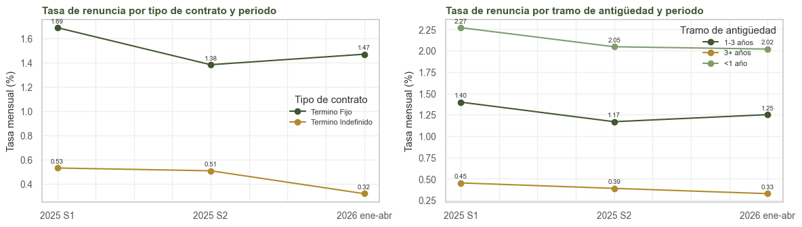
renuncias mínimas por celda (contrato x periodo, antigüedad x periodo): 25 29
razón de tasas fijo / indefinido por periodo: {'2025 S1': 3.17, '2025 S2': 2.71, '2026 ene-abr': 4.57}
candidatas = ['contrato', 'antig_t', 'edad', 'linea', 'meses_en_funcion', 'ingreso_vs_pactado_3m',
'meses_con_extras_12m', 'dias_vacaciones_pendientes', 'privacion_oficio_nivel',
'dias_licencia_no_remunerada_3m_r2', 'meses_al_vencimiento', 'cesantias_vivienda_historico']
filas = []
for v in candidatas:
z = t[[v, 'periodo', 'y']].copy()
if v == 'linea': # puerto y ganadería tienen muy pocas renuncias por periodo: se agrupan
z[v] = z[v].where(~z[v].isin(['puerto', 'ganaderia']), 'puerto y ganadería')
elif v in NUM and tr[v].nunique() > 3:
tercil = pd.qcut(z[v], 3, duplicates='drop')
# si los terciles colapsan (más de dos tercios en cero), se usa la indicadora de valor positivo
z[v] = tercil.astype(str) if tercil.nunique() >= 2 else (z[v] > 0).astype(str)
z['g'] = z[v].astype(str)
con = logit('y ~ C(g) * C(periodo)', data=z).fit(disp=0, maxiter=200)
sin = logit('y ~ C(g) + C(periodo)', data=z).fit(disp=0, maxiter=200)
lr = 2 * (con.llf - sin.llf)
gl = con.df_model - sin.df_model
minimo = int(z.groupby(['g', 'periodo']).y.sum().min())
filas.append({'variable': v, 'bloque': BLOQUE.get(v, 'atributos'), 'grupos': z.g.nunique(),
'renuncias mín. por celda': str(minimo) if minimo >= 5 else '<5',
'LR': lr, 'gl': int(gl), 'p': stats.chi2.sf(lr, gl)})
concepto = pd.DataFrame(filas).set_index('variable')
concepto['p Holm'] = multipletests(concepto.p, method='holm')[1]
concepto.sort_values('p').round(3)
| variable | bloque | grupos | renuncias mín. por celda | LR | gl | p | p Holm |
|---|---|---|---|---|---|---|---|
| meses_al_vencimiento | contrato | 4 | 14 | 16.044 | 4 | 0.003 | 0.036 |
| privacion_oficio_nivel | salario_relativo | 4 | 16 | 15.512 | 4 | 0.004 | 0.041 |
| meses_con_extras_12m | jornada | 4 | <5 | 12.450 | 4 | 0.014 | 0.143 |
| ingreso_vs_pactado_3m | ingreso_relativo | 4 | <5 | 9.469 | 4 | 0.050 | 0.453 |
| linea | atributos | 5 | <5 | 13.515 | 8 | 0.095 | 0.762 |
| contrato | atributos | 2 | 25 | 4.157 | 2 | 0.125 | 0.876 |
| dias_licencia_no_remunerada_3m_r2 | ausencias | 2 | 73 | 3.775 | 2 | 0.151 | 0.909 |
| edad | atributos | 3 | 16 | 3.109 | 4 | 0.540 | 1.000 |
| dias_vacaciones_pendientes | vacaciones | 2 | 8 | 0.238 | 2 | 0.888 | 1.000 |
| cesantias_vivienda_historico | arraigo | 2 | 17 | 0.196 | 2 | 0.907 | 1.000 |
| antig_t | atributos | 3 | 29 | 0.973 | 4 | 0.914 | 1.000 |
| meses_en_funcion | trayectoria | 3 | 17 | 0.409 | 4 | 0.982 | 1.000 |
# tasa (%) por tercil y periodo de las variables cuya interacción sobrevive a Holm
for v in concepto.index[concepto['p Holm'] < 0.05]:
g = pd.qcut(t[v], 3, duplicates='drop').astype(str)
tabla = t.groupby([g, 'periodo']).y.agg(['sum', 'mean']).unstack()
salida = (100 * tabla['mean']).round(2).where(tabla['sum'] >= 5)
print(f'{v}: tasa mensual (%) por tercil y periodo (celdas con menos de 5 renuncias suprimidas)')
print(salida.to_string())
print()
privacion_oficio_nivel: tasa mensual (%) por tercil y periodo (celdas con menos de 5 renuncias suprimidas)
periodo 2025 S1 2025 S2 2026 ene-abr
privacion_oficio_nivel
(-0.001, 0.0036] 0.76 0.48 0.35
(0.0036, 0.0255] 0.54 0.90 0.69
(0.0255, 0.802] 1.66 0.94 0.99
nan 1.37 1.38 1.47
meses_al_vencimiento: tasa mensual (%) por tercil y periodo (celdas con menos de 5 renuncias suprimidas)
periodo 2025 S1 2025 S2 2026 ene-abr
meses_al_vencimiento
(-3.001, 2.0] 1.51 1.28 1.36
(2.0, 5.0] 1.81 1.78 2.07
(5.0, 18.0] 1.72 0.73 0.61
nan 0.53 0.51 0.32
Nótese que la relación de las variables principales con la renuncia se mantiene: el contrato (razón de tasas fijo/indefinido de 3,2, 2,7 y 4,6 según el periodo; p = 0,13), la antigüedad (p = 0,91), la edad, la línea, las vacaciones pendientes, las licencias no remuneradas y los meses en la función no tienen interacción con el periodo. Dos variables sí la tienen después de Holm:
meses_al_vencimiento(p Holm = 0,036): el tercil de contratos lejos del vencimiento (más de 5 meses) tuvo 1,72 % en el primer semestre de 2025 y 0,73 % y 0,61 % después, mientras los contratos cerca del vencimiento se mantienen.privacion_oficio_nivel(p Holm = 0,041): el tercil de mayor privación salarial baja de 1,66 % a 0,94 % y 0,99 %, y el de menor privación de 0,76 % a 0,35 %.
Las dos cambian en el primer semestre de 2025, el mismo tramo del descenso de nivel, y la segunda es también una de las variables con deriva de la población. Con doce pruebas y tres periodos no es una prueba de deriva general del concepto, pero sí un aviso: el efecto de esas dos variables estimado con los 16 meses mezcla un periodo en que pesaban más. La regularización y la validación de ventana creciente del capítulo 7 son la defensa; allí conviene mirar si sus coeficientes cambian entre pliegues.
5.10. Series por línea de negocio#
Como una persona renuncia a lo sumo una vez, no tiene sentido una serie por persona. La heterogeneidad temporal se examina por línea de negocio. Para no publicar puntos con muy pocos casos, cada punto es una ventana móvil de 3 meses (renuncias de la ventana entre persona-mes de la ventana) y se suprime si la ventana tiene menos de 5 renuncias.
fig, ax = plt.subplots(figsize=(11, 3.8))
suprimidos = {}
for linea, z in tr.groupby('linea'):
g = z.groupby('mes')[OBJETIVO].agg(['sum', 'size'])
r3, n3 = g['sum'].rolling(3).sum(), g['size'].rolling(3).sum()
tasa3 = (100 * r3 / n3).where(r3 >= 5)
suprimidos[linea] = int((r3.notna() & tasa3.isna()).sum())
if tasa3.notna().sum() >= 3:
fechas = pd.PeriodIndex(tasa3.index, freq='M').to_timestamp()
ax.plot(fechas, tasa3, marker='.', label=f'{linea} (n={len(z):,})')
ax.set(title='Tasa de renuncia por línea (ventana móvil de 3 meses)', ylabel='Tasa mensual (%)')
ax.legend(fontsize=7, ncol=3, title='Línea')
plt.tight_layout()
plt.show()
print('ventanas suprimidas por tener menos de 5 renuncias (de 14):', suprimidos)
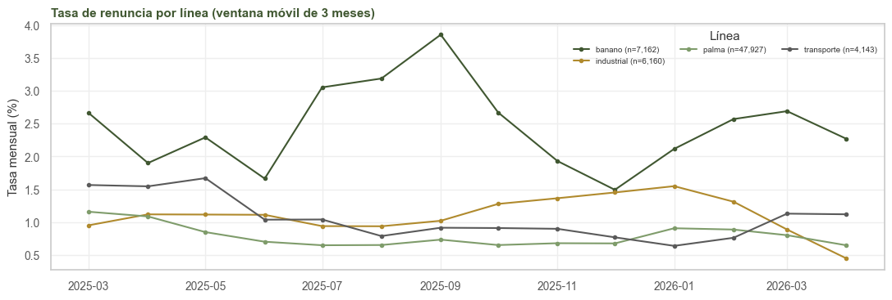
ventanas suprimidas por tener menos de 5 renuncias (de 14): {'banano': 0, 'ganaderia': 14, 'industrial': 0, 'palma': 0, 'puerto': 12, 'transporte': 0}
filas = []
for linea, z in tr.groupby('linea'):
g = z.groupby('mes')[OBJETIVO].agg(['sum', 'size'])
p_l = g['sum'].sum() / g['size'].sum()
esperado = g['size'] * p_l
fila = {'línea': linea, 'persona-mes': int(g['size'].sum()), 'renuncias': int(g['sum'].sum()),
'tasa %': 100 * p_l, 'desv. entre meses (pp)': (100 * g['sum'] / g['size']).std(),
'desv. por azar (pp)': 100 * np.sqrt(p_l * (1 - p_l) / g['size']).mean()}
if esperado.min() >= 5:
chi, pv = stats.chi2_contingency(np.c_[g['sum'], g['size'] - g['sum']], correction=False)[:2]
fila.update({'chi-cuadrado (15 gl)': chi, 'p': pv})
filas.append(fila)
lineas = pd.DataFrame(filas).set_index('línea').sort_values('persona-mes', ascending=False)
grandes = t[t.linea.isin(lineas.index[lineas.renuncias >= 40])]
con = logit('y ~ C(linea) * C(periodo)', data=grandes).fit(disp=0)
sin = logit('y ~ C(linea) + C(periodo)', data=grandes).fit(disp=0)
lr, gl = 2 * (con.llf - sin.llf), con.df_model - sin.df_model
print(f'interacción línea x periodo (líneas con 40 o más renuncias): LR {lr:.2f} con {gl:.0f} gl, '
f'p = {stats.chi2.sf(lr, gl):.3f}')
lineas.round(3)
interacción línea x periodo (líneas con 40 o más renuncias): LR 9.08 con 6 gl, p = 0.169
| línea | persona-mes | renuncias | tasa % | desv. entre meses (pp) | desv. por azar (pp) | chi-cuadrado (15 gl) | p |
|---|---|---|---|---|---|---|---|
| palma | 47927 | 388 | 0.810 | 0.260 | 0.164 | 37.239 | 0.001 |
| banano | 7162 | 175 | 2.443 | 1.077 | 0.730 | 32.525 | 0.005 |
| industrial | 6160 | 64 | 1.039 | 0.436 | 0.517 | NaN | NaN |
| transporte | 4143 | 43 | 1.038 | 0.584 | 0.630 | NaN | NaN |
| puerto | 1411 | 12 | 0.850 | 1.035 | 0.978 | NaN | NaN |
| ganaderia | 613 | 6 | 0.979 | 1.554 | 1.591 | NaN | NaN |
Nótese que las líneas difieren sobre todo en nivel: banano tiene la tasa más alta (2,44 % mensual, tres veces palma) y palma la más baja (0,81 %). Ganadería (14 de 14 ventanas) y puerto (12 de 14) quedan fuera del gráfico por tener menos de 5 renuncias por ventana, y se reportan solo en total. Palma y banano tienen variación entre meses por encima del azar (chi-cuadrado 37,2 y 32,5 con 15 gl, p = 0,001 y 0,005; banano, con un pico en la ventana de julio a septiembre de 2025), pero la interacción línea × periodo en las cuatro líneas con 40 o más renuncias no es significativa (p = 0,17): no hay evidencia de que las líneas sigan tendencias distintas. La heterogeneidad se captura con la línea como predictora; no hace falta un término temporal por línea.
5.11. Consecuencias para el modelado#
5.11.1. ¿Entra el mes del año como predictora?#
La evidencia de estacionalidad es débil y descansa en dos eneros. Para decidir sin mirar el test,
repetimos en el entrenamiento la validación de ventana creciente que usará el capítulo 7
(pliegues_temporales: se valida cada mes desde septiembre de 2025 y se entrena con los meses
anteriores, dejando un mes de separación) con tres modelos que solo usan el calendario: una tasa
constante, una indicadora de enero y el par seno-coseno del mes del año,
\(\sin(2\pi m/12)\) y \(\cos(2\pi m/12)\). Se compara la pérdida logarítmica en cada mes validado. Si el
calendario no mejora a la constante fuera de muestra, tampoco aportará dentro del modelo completo.
cal = tr[['mes', OBJETIVO]].reset_index(drop=True)
cal['m'] = cal.mes.str[5:].astype(int)
cal['enero'] = (cal.m == 1).astype(float)
cal['seno'], cal['coseno'] = np.sin(2 * np.pi * cal.m / 12), np.cos(2 * np.pi * cal.m / 12)
cal = cal.rename(columns={OBJETIVO: 'y'})
formulas = {'constante': 'y ~ 1', 'enero': 'y ~ enero', 'seno y coseno': 'y ~ seno + coseno'}
filas = []
for entrena, valida in pliegues_temporales(cal.mes.to_numpy()):
a, b = cal.iloc[entrena], cal.iloc[valida]
fila = {'mes validado': b.mes.iloc[0], 'meses de entrenamiento': a.mes.nunique()}
for nombre, f in formulas.items():
if nombre == 'enero' and a.enero.sum() == 0:
prob = np.full(len(b), a.y.mean())
else:
prob = logit(f, data=a).fit(disp=0).predict(b)
fila[nombre] = log_loss(b.y, prob, labels=[0, 1])
filas.append(fila)
cv_cal = pd.DataFrame(filas).set_index('mes validado')
for nombre in ['enero', 'seno y coseno']:
cv_cal[f'{nombre} - constante'] = cv_cal[nombre] - cv_cal.constante
print('pérdida logarítmica media en los 8 meses validados:')
print(cv_cal[list(formulas)].mean().round(5).to_string())
print('meses en que cada calendario mejora a la constante:',
{n: int((cv_cal[f'{n} - constante'] < 0).sum()) for n in ['enero', 'seno y coseno']})
(cv_cal * 1).round(5)
pérdida logarítmica media en los 8 meses validados:
constante 0.05309
enero 0.05298
seno y coseno 0.05339
meses en que cada calendario mejora a la constante: {'enero': 8, 'seno y coseno': 1}
| mes validado | meses de entrenamiento | constante | enero | seno y coseno | enero - constante | seno y coseno - constante |
|---|---|---|---|---|---|---|
| 2025-09 | 7 | 0.06084 | 0.06084 | 0.06091 | -0.00000 | 0.00007 |
| 2025-10 | 8 | 0.04395 | 0.04387 | 0.04460 | -0.00008 | 0.00065 |
| 2025-11 | 9 | 0.04990 | 0.04986 | 0.05064 | -0.00004 | 0.00073 |
| 2025-12 | 10 | 0.05306 | 0.05303 | 0.05329 | -0.00003 | 0.00024 |
| 2026-01 | 11 | 0.07365 | 0.07321 | 0.07333 | -0.00045 | -0.00033 |
| 2026-02 | 12 | 0.05113 | 0.05110 | 0.05143 | -0.00003 | 0.00029 |
| 2026-03 | 13 | 0.04460 | 0.04446 | 0.04516 | -0.00014 | 0.00056 |
| 2026-04 | 14 | 0.04757 | 0.04747 | 0.04775 | -0.00010 | 0.00018 |
Nótese que el seno-coseno empeora a la constante en 7 de los 8 meses validados (pérdida media 0,05339 frente a 0,05309): con menos de dos ciclos, dos parámetros de forma anual se ajustan al ruido. La indicadora de enero mejora a la constante en los 8 meses (0,05298), pero la mejora es pequeña (0,2 % de la pérdida) y en siete de ellos no viene de enero sino de que, al separar enero, la tasa del resto del año queda más baja y se acerca al nivel reciente; solo en enero de 2026 la mejora es propiamente estacional (0,00045, la mayor de todas). Doce indicadoras del mes del año no se pueden evaluar así (los primeros pliegues no han visto septiembre ni octubre) y con un solo dato de mayo a diciembre serían, en la práctica, un efecto fijo de cada mes concreto.
Decisiones para el capítulo 7:
Partición cronológica (entrenamiento hasta abril de 2026, test de mayo a agosto) y validación de ventana creciente por mes con un mes de separación (
pliegues_temporales). No se usaTimeSeriesSplit(gap=...): en un panel el gap cuenta filas, no meses.Calendario: entra solo la indicadora de enero (un parámetro), no el mes del año con once indicadoras ni el seno-coseno. En el test (mayo a agosto) vale 0 en todas las filas, de modo que su efecto allí es solo que el intercepto no absorba el pico de enero; su utilidad plena es en el uso real, cuando el modelo puntúe un enero.
Rezagos solo con información pasada. Las ventanas de la historia ya terminan en \(t-1\) (\(t-2\) las
_r2); no se agregan rezagos de la tasa global ni agregados mensuales, porque no anticipan la tasa.Variables que marcan la fecha.
horas_diarias_teoricasyplan_horariosiguen la reducción legal de la jornada (Ley 2101 de 2021), no a la persona, y en el test tomarían valores nuevos: quedan fuera del modelo, comocambios_plan_12m. El faltante detamano_equipo_jefecambia de significado en 2025 y su indicador de faltante debe leerse con cuidado.Calibración. Con el descenso de nivel de 2025, la tasa prevista puede quedar por encima de la observada en los meses recientes; se revisa con la calibración por mes, y no cambia la discriminación.
5.12. Síntesis#
La variable
meses mensual, completa y sin huecos ni duplicados; la cobertura de la historia es estable salvo el tamaño del equipo del jefe y las marcaciones biométricas.La tasa oscila alrededor de 1,02 %, con variación entre meses por encima del azar (p = 0,002) y un descenso moderado de nivel entre enero-abril de 2025 (1,24 %) y enero-abril de 2026 (0,96 %) que ni el CUSUM (p = 0,19) ni el corte óptimo (p = 0,10) permiten fechar.
ADF y KPSS coinciden en una serie estacionaria en nivel, sin autocorrelación detectable. STL no aplica con menos de dos ciclos anuales.
Hay indicios de un efecto de calendario ligado a la prima (menos renuncias en junio y diciembre, más en enero y julio), apoyado en dos eneros y un solo junio y julio. Fuera de muestra, solo la indicadora de enero mejora a la constante: entra al modelo; el mes del año y el seno-coseno no.
La composición agregada del mes no anticipa la tasa: las correlaciones en niveles son una tendencia común (falacia ecológica) y desaparecen con primeras diferencias.
De 105 predictoras, 91 son estables y 8 tienen deriva grande, que viene del ciclo anual del salario, del envejecimiento del panel y de cambios de cobertura.
horas_diarias_teoricasyplan_horariosiguen el calendario de la Ley 2101 de 2021, marcan la fecha y quedan fuera de las predictoras.La relación de contrato, antigüedad, edad y línea con la renuncia es estable entre periodos; dos variables (meses al vencimiento y privación salarial) muestran deriva del concepto en el primer semestre de 2025.
Las líneas difieren en nivel (banano 2,44 %, palma 0,81 %) pero no en tendencia (p = 0,17).
No hay componente espacial: 2.7 y 2.8 no aplican.